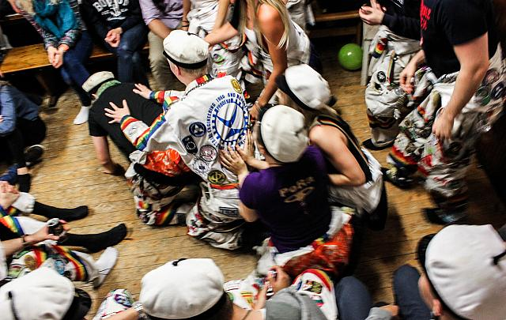

Opinnot
Pellentesque habitant morbi tristique senectus et netus et malesuada fames ac turpis egestas. Vestibulum tortor quam, feugiat vitae, ultricies eget, tempor sit amet, ante. Donec eu libero sit amet quam egestas semper. Aenean ultricies mi vitae est. Mauris placerat eleifend leo. Quisque sit amet est et sapien ullamcorper pharetra. Vestibulum erat wisi, condimentum sed, commodo vitae, ornare sit amet, wisi. Aenean fermentum, elit eget tincidunt condimentum, eros ipsum rutrum orci, sagittis tempus lacus enim ac dui. Donec non enim in turpis pulvinar facilisis. Ut felis. Praesent dapibus, neque id cursus faucibus, tortor neque egestas augue, eu vulputate magna eros eu erat. Aliquam erat volutpat. Nam dui mi, tincidunt quis, accumsan porttitor, facilisis luctus, metus

Opiskelijaelämä
Pellentesque habitant morbi tristique senectus et netus et malesuada fames ac turpis egestas. Vestibulum tortor quam, feugiat vitae, ultricies eget, tempor sit amet, ante. Donec eu libero sit amet quam egestas semper. Aenean ultricies mi vitae est. Mauris placerat eleifend leo. Quisque sit amet est et sapien ullamcorper pharetra. Vestibulum erat wisi, condimentum sed, commodo vitae, ornare sit amet, wisi. Aenean fermentum, elit eget tincidunt condimentum, eros ipsum rutrum orci, sagittis tempus lacus enim ac dui. Donec non enim in turpis pulvinar facilisis. Ut felis. Praesent dapibus, neque id cursus faucibus, tortor neque egestas augue, eu vulputate magna eros eu erat. Aliquam erat volutpat. Nam dui mi, tincidunt quis, accumsan porttitor, facilisis luctus, metus

Hakeminen
Tuotantotalouden diplomi-insinöörin koulutusohjelmaan haetaan opintopolku.fi -nettisivulla. Diplomi-insinööri -koulutuksen yhteishaku alkaa ke 14.3.2018 klo 8.00 ja päättyy ke 28.3.2018 klo 15.00. Alkupisteiden (ylioppilastodistuksen arvosanojen määrittämät pisteet) perusteella tehtävän valinnan tulokset julkaistaan pe 25.5.2018 klo 12.00. Tuotantotalouden koulutusohjelmaan vaadittavat matematiikan ja fysiikan kokeet järjestetään seuraavasti:
- Matematiikka: ti 29.5.2018 klo 14-17
- Fysiikka: ke 30.5.2018 klo 14-18
Alkupistevalinnassa valittujen hakijoiden ei tarvitse osallistua kyseisiin kokeisiin. Yhteishaun tulokset julkaistaan opintopolussa to 28.6.2018 ja opiskelupaikka on otettava vastaan viimeistään ti 10.7.2018 klo 15.00.
Tärkeitä linkkejä
- DIA - haku
- Opintopolku : Aalto - Yliopiston Tuotantotalouden koulutusohjelma
- Tuotantotalouden opinto-opas (kandidaatin tutkinto)
- Vanhoja pääsykokeita
(myös arkkitehtuurin vanhoja matematiikan kokeita kannattaa vilkaista)
- Fysiikan kokeen aihealueet vuonna 2018
- Opiskelijavalinnan tuloksia
- Aiemmat pisterajat
- Fysiikan kertausmateriaaleja

Abien polkuja tutalle
Pellentesque habitant morbi tristique senectus et netus et malesuada fames ac turpis egestas. Vestibulum tortor quam, feugiat vitae, ultricies eget, tempor sit amet, ante. Donec eu libero sit amet quam egestas semper. Aenean ultricies mi vitae est. Mauris placerat eleifend leo. Quisque sit amet est et sapien ullamcorper pharetra. Vestibulum erat wisi, condimentum sed, commodo vitae, ornare sit amet, wisi. Aenean fermentum, elit eget tincidunt condimentum, eros ipsum rutrum orci, sagittis tempus lacus enim ac dui. Donec non enim in turpis pulvinar facilisis. Ut felis. Praesent dapibus, neque id cursus faucibus, tortor neque egestas augue, eu vulputate magna eros eu erat. Aliquam erat volutpat. Nam dui mi, tincidunt quis, accumsan porttitor, facilisis luctus, metus